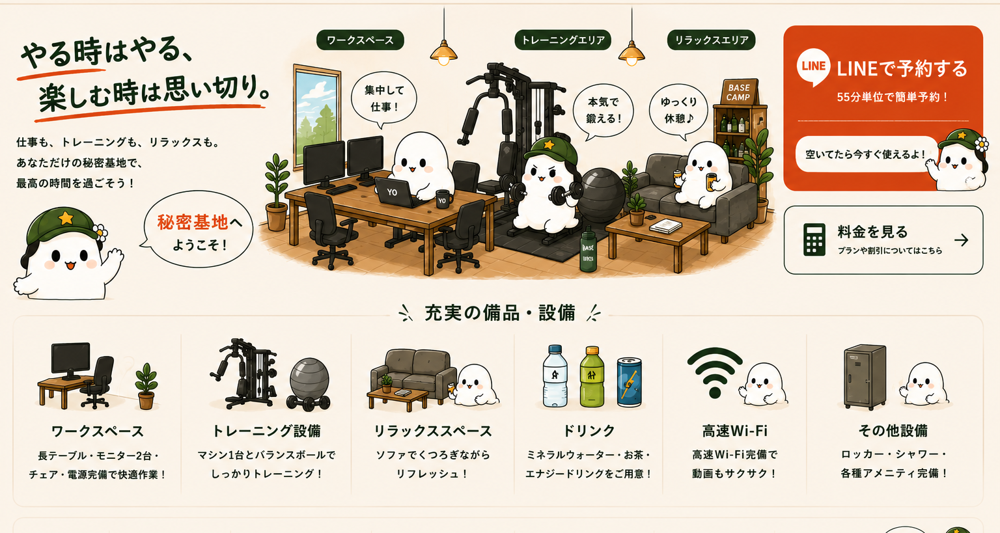
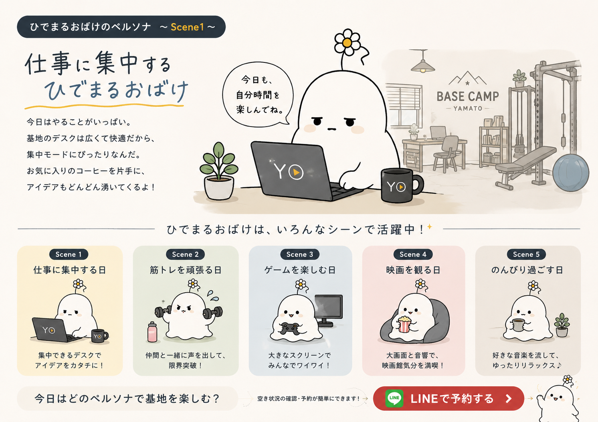

ワークスペース
長テーブル、モニター2台、椅子2脚。仕事や勉強に集中できます。

LINEで予約するBASE CAMPとは
仕事も、トレーニングも、ゲームも、映画も。仲間と声を掛け合いながら、その日の「やりたい」を自由に楽しめる、完全貸切の秘密基地です。
備品紹介
長テーブル、モニター2台、椅子2脚。仕事や勉強に集中できます。
筋トレマシン1台とバランスボール。仲間と声を掛け合って使えます。
休憩、ゲーム、映画鑑賞など、その日の気分に合わせて自由に。
料金
ひでまるおばけのペルソナ

広いデスクと快適なWi‑Fiで、仕事や勉強に集中する一日。お気に入りのドリンクを片手に、自分のペースで作業を進めます。
ペルソナは、利用者の声や新しい使い方に合わせて少しずつ増やしていきます。
オーナーの想い
筋力トレーニングを続ける中で、トレーナーや仲間に支えてもらいながら限界へ挑戦する楽しさを知りました。
しかし、普通のジムでは、友達同士で声を掛け合ったり、好きな音楽を流したり、自分たちのペースでトレーニングすることが難しいと感じます。
「仲間と自由に使えるレンタルジムが、近くにあったらいい。」そこから発想を広げ、仕事をしたり、ゲームをしたり、映画を観たり、その日の好きなことを楽しめる“秘密基地”をつくりたいと思いました。
BASE CAMP YAMATOは、まだ完成形ではありません。皆さまからいただく気付きやアイデアを取り入れながら、もっと快適で、もっと楽しい施設へ育てていきます。
ひでまるおばけと一緒に利用者の皆さまがレベルアップしていくように、私自身も、この施設も、少しずつレベルアップしていきたいと思っています。
皆さまと一緒に、この秘密基地を育てていけたら嬉しいです。
アクセス
〒216-0004
神奈川県川崎市宮前区鷺沼3丁目1−1
渋谷駅から約40分
今日はどのペルソナで基地を楽しむ？
LINEで予約するLINE公式アカウントのURL取得後にリンクを設定します。